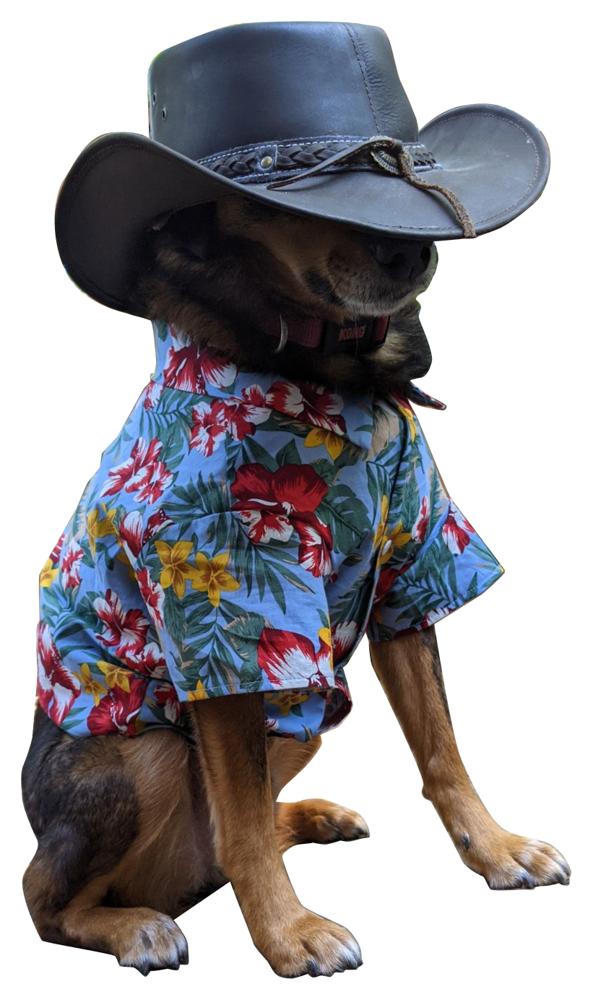

Beyond work
A little more
human.
There’s more to me than what’s in a case study.
Meet Brick.
My dog. Excellent company.
Clearly, the better dresser.

Beyond work
There’s more to me than what’s in a case study.
My dog. Excellent company.
Clearly, the better dresser.

Thoughtful products. Interesting problems. A little possibility.